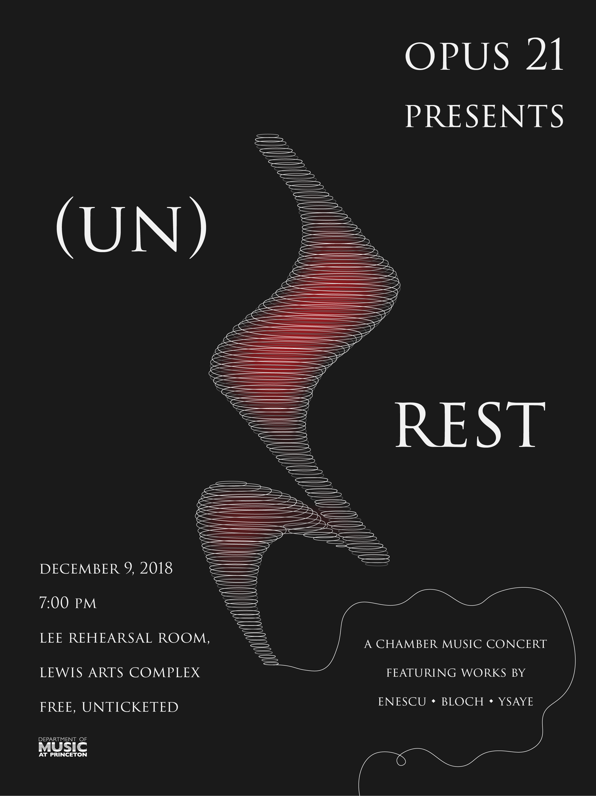
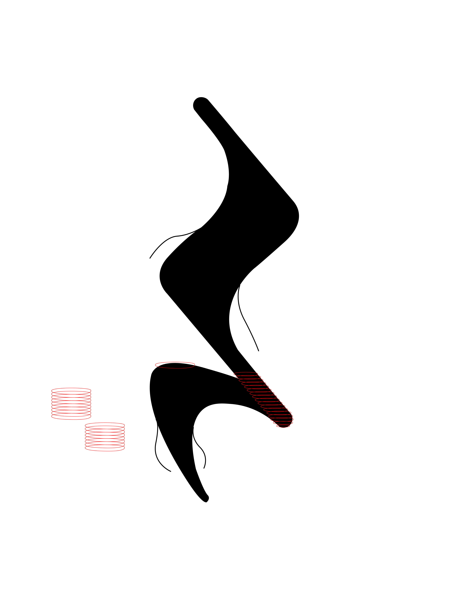
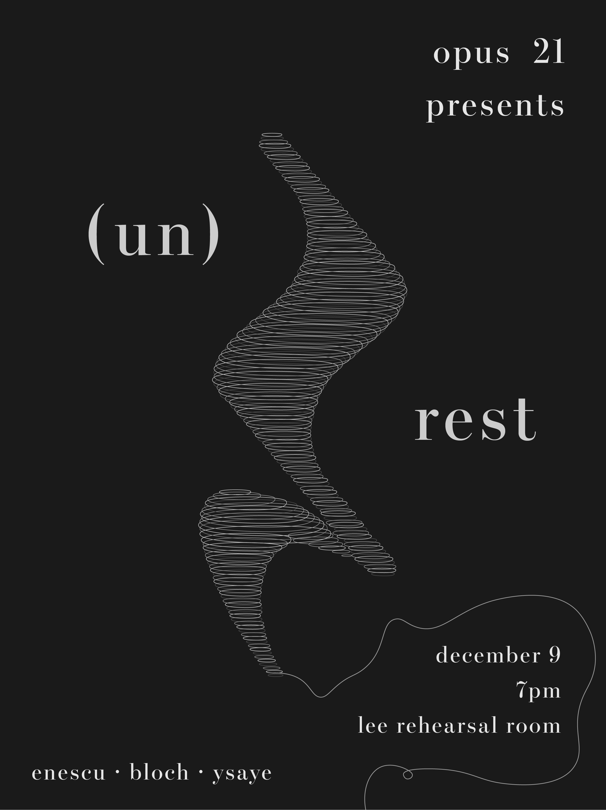
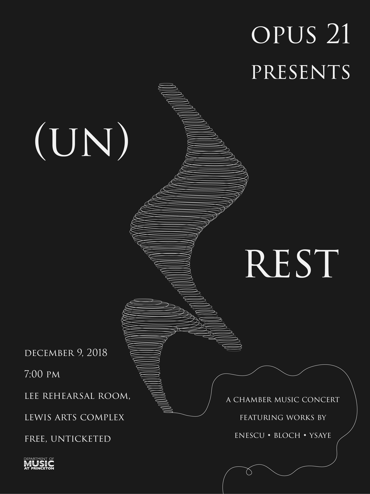
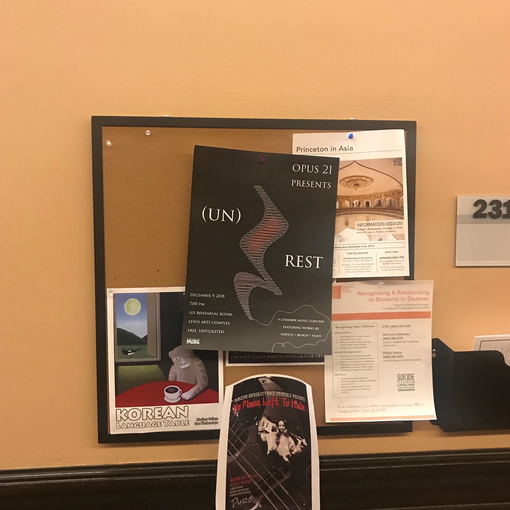
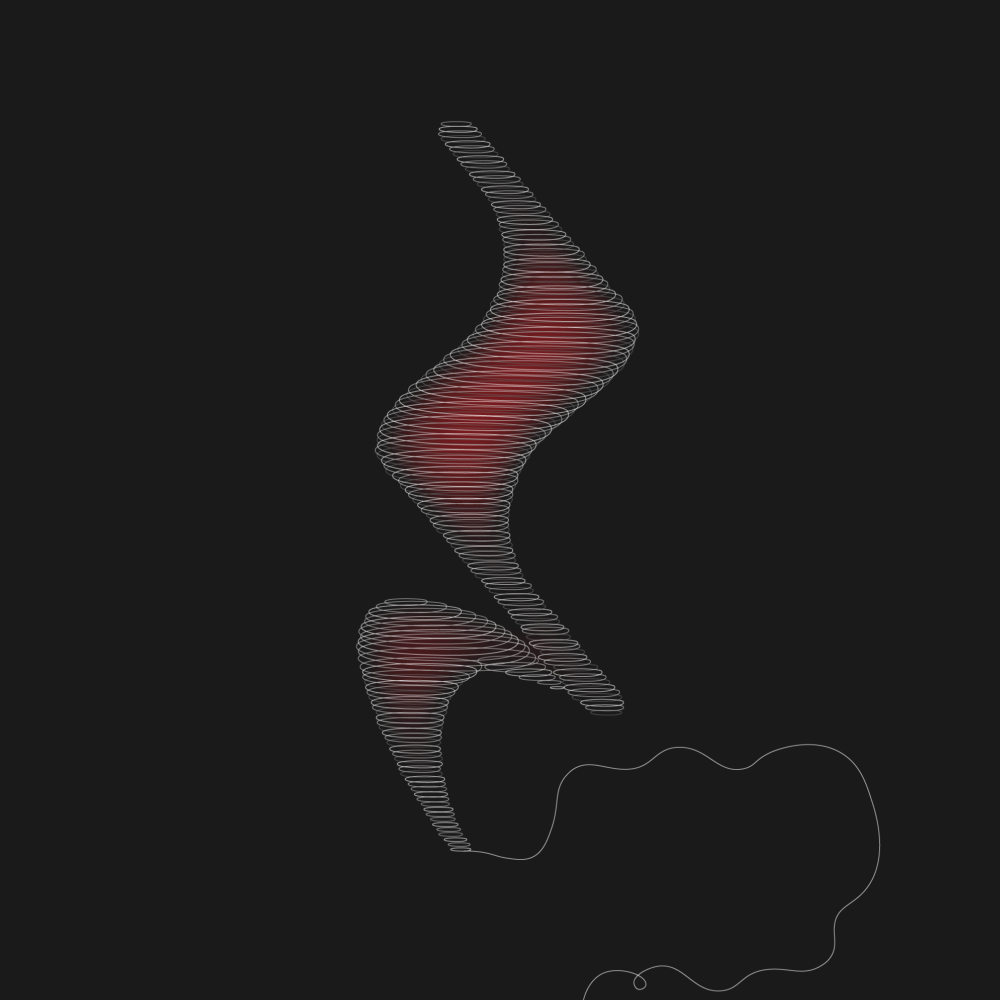

In December, Princeton's chamber music group, Opus 21, put on a performance exploring the music of Eastern Europe, a region of rich culture and turbulent history.
The performance included chamber works by Enescu, Rachmaninov, among others.
These composers lived through one of the most dramatic periods of Eastern European history in which great change was unfolding-- overthrow, revolution, and modernization.
The selected works are a creative exploration of the vast range of human emotion during this time.
The title of the performance, (Un)rest, reflected the desire for this event to inspire thoughtful reflection on both history and its parallels in contemporary society.
My client wished to create a poster to publicize this event that captured the angst and turbulence of 18th-19th century Eastern Europe.
This is what I ultimately came up with:

When I first heard the name "(un)rest," a quarter-note rest immediately popped into my head. I decided it would be effective to use this symbol as the main graphic element to make a connection to the name of the program. I wanted to convey a sense of something that appears calm on the outside, but is slowly churning internally, which led me to imagine little threads unraveling from the rest, like the edges of frayed cloth. I took inspiration from a pair of cutoff jeans I was wearing and tried to transfer that effect to Illustrator. This was my first quick attempt:

Turns out, that idea sounded much cooler in my head. When I actually tried it out I didn't like it very much... it reminded me of leg hairs!! So I decided to scratch that and think of some other way to convey what I was going for, and that's when I thought of yarn. I thought maybe, instead of threads unraveling, I can have a ball of yarn unrolling to signal imminent chaos. I decided make the "yarn" in the shape of a rest, so it still preserves the connection to the title, and used a stack of flattened ovals to create the rolled-up texture of a ball of yarn.

I ran this by my client and she seemed to really enjoy it, so I decided to continue with this concept. I modified the text because for this event, I thought uppercase text would add to a more grandiose feel, like so (I added some concert details as well):

I really enjoyed how the blurbs "(UN)" and "REST" fit nicely along the curvature of the rest because it helped the poster appear balanced. Next, I wanted to figure out a way to make the poster appear slightly less monotonous, especially since many people these days often tend to think of classical music as rather bland and old-school, and the greyscale-ness of the poster did not help with that. I thought even a little pop of color could make a statement against the dark grey background. Thus, I decided to incorporate a vibrant red in the main graphic. I wanted it to almost look like something is brewing inside. I thought adding this element helped emphasize the angsty feel as well as help the graphic pop out from the background. I really like how the final product turned out.
I always love seeing my posters around campus. Here's one I spotted on my way to chinese class!

